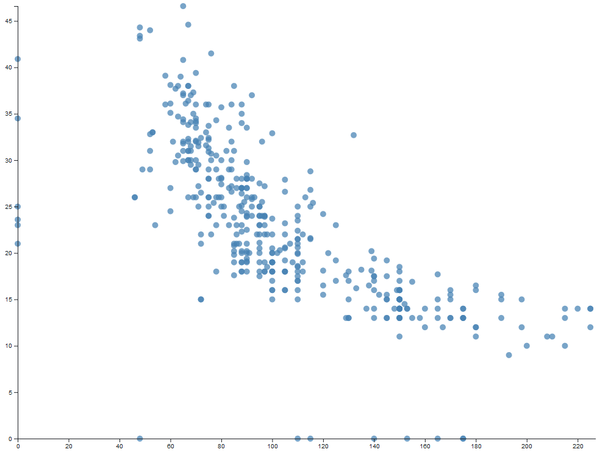
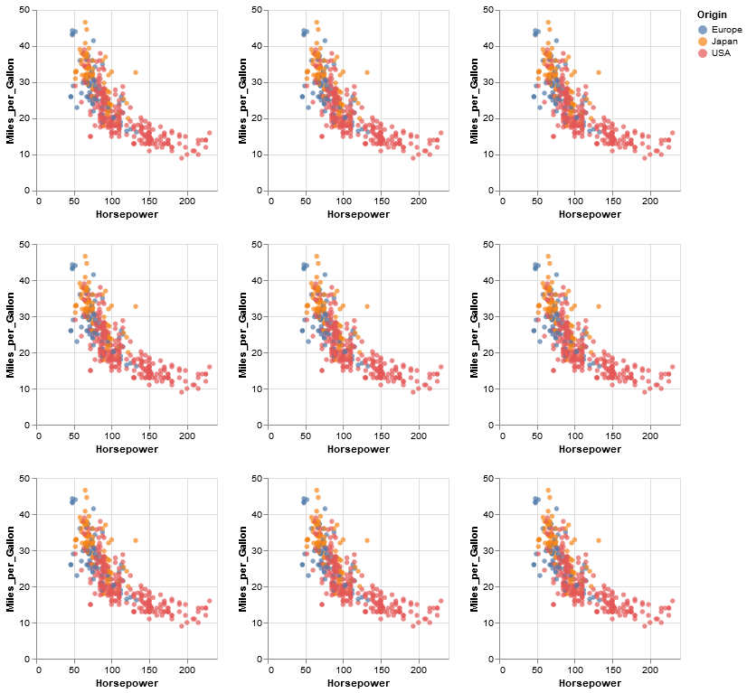
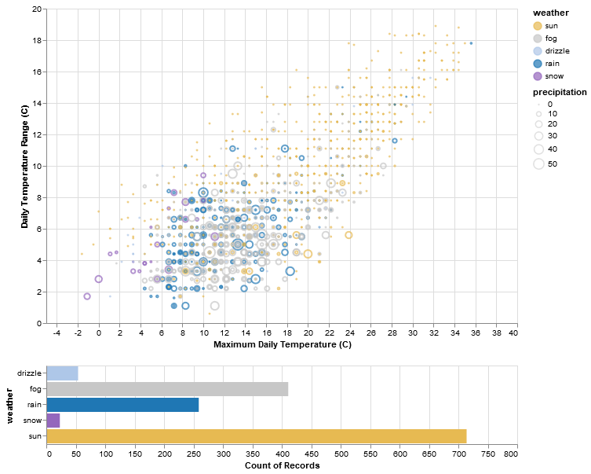
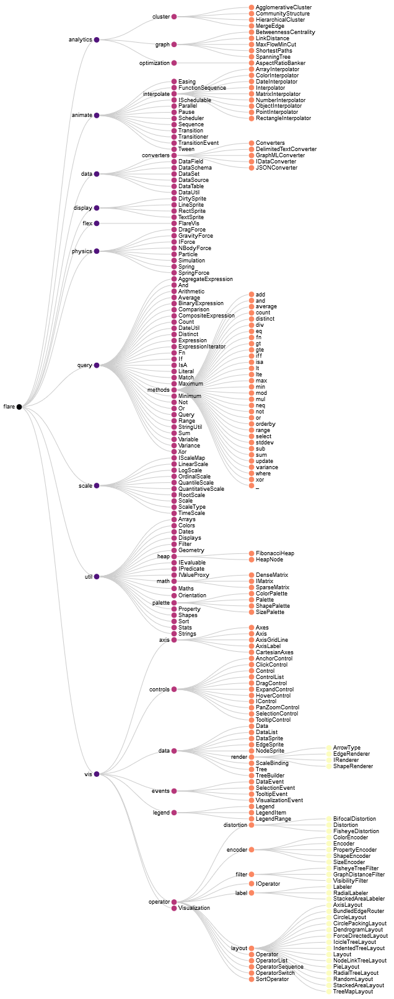

Publications
2019
-
ReVize: A Library for Visualization Toolchaining with Vega-Lite (to appear)
Marius Hogräfer, Hans-Jörg Schulz
Proc. of the Conference on Smart Tools and Applications in Graphics (STAG'19), (2019) -
The Human User in Progressive Visual Analytics
Luana Micallef, Hans-Jörg Schulz, Marco Angelini, Michaël Aupetit, Remco Chang, Jörn Kohlhammer, Adam Perer, Giuseppe Santucci
Short Paper Proc. of the 21st EG/VGTC Conference on Visualization (EuroVis'19) (2019) -
On Quality Indicators for Progressive Visual Analytics
Marco Angelini, Thorsten May, Giuseppe Santucci, Hans-Jörg Schulz
Proc. of the International EuroVis Workshop on Visual Analytics (EuroVA'19) (2019) -
Lightweight Coordination of Multiple Independent Visual Analytics Tools
Hans-Jörg Schulz, Martin Röhlig, Lars Nonnemann, Mario Aehnelt, Holger Diener, Bodo Urban, Heidrun Schumann
Proc. of the International Conference on Information Visualization Theory and Applications (IVAPP'19), pp.106-117 (2019)
2018
-
 Parallel Hierarchies
Parallel Hierarchies
Zana Vosough, Marius Hogräfer, Loïc A. Royer, Rainer Groh, Hans-Jörg Schulz
Computers & Graphics Vol.76, pp.1-17 (2018) -
A Review and Characterization of Progressive Visual Analytics
Marco Angelini, Giuseppe Santucci, Heidrun Schumann, Hans-Jörg Schulz
Informatics Vol.5 No.3, pp.31:1-27 (2018)
Open Source Software Visit us on Github

Selected Student Projects
Thesis Projects
Outcomes of Master and Bachelor theses at our group.


{kind=link}
Data Visualization Course
Here we list some of the student projects from the Data Visualization course.
2019
-
 - Casper Hogenboom.png) Expanding your portfolio with Sneakers
Expanding your portfolio with SneakersAre you looking for an alternative way to enrich your portfolio? Step into the world of the sneaker business, and plan out your technical strategies. In this project, a dataset from the website StockX is explored to give an insight into what time it is best to buy or sell.
-
 High-Dimensionality Data Exploration to Reveal Features Underlying Disease
High-Dimensionality Data Exploration to Reveal Features Underlying DiseaseSome disease predictors are inaccurate in distinguishing a pre-disease population. Unsupervised learning allows for clustering of medical data without need of a disease predictor. This tool allows for analysis of high dimensional patient data and exploration of patient grouping into diseased, at-risk, and healthy populations as derived from unsupervised methods. These methods can be altered quickly, providing rapid analysis of the clusters and insight into novel biomarkers underlying disease.
-
 Facebook Messages
Facebook MessagesFacebook Messenger makes it easy to send and receive messages between your friends, and you can create group chats to keep in touch with many people at once. But Facebook does not provide a way of searching for patterns or trends in your messaging data. In this project, I create a visualisation of my own Facebook Messenger data that allows for overview and details on demand by filtering the data set and finding trends based on contact, timeframe, conversation type, month, weekday or hour.
-
 Language Correlation in Open Source
Language Correlation in Open SourceThis visualization helps to explore how different languages are connected to each other on Github. This is done by having a matrix representation showing the deviation from the expected value, and a chord diagram visualising the amount of connections between each language. We make a connection between language A and language B, if a user on Github has a repo with A and another repo with B.
-
 What's going on in German Government?
What's going on in German Government?This project aims to shed light into the matters of the German Bundestag by presenting the voting outcome for each parliament session since 2007 in a visually analyzable way. It allows comparing the voting behavior of the parties against each other and over time.
-
 Displacing Germany: A Look at Trans-Atlantic Slave Trade
Displacing Germany: A Look at Trans-Atlantic Slave TradeAround 10 million people were abducted from Africa and shipped to the Americas between the years 1510 to 1860 as part of the transatlantic slave trade. This amounted to one percent of the world's total population in 1800. Today, the same would be analogous to displacing entire country of Germany. Our project is an attempt to visualise the involved voyages both on an aggregate and detailed level to shed some light on the human element of the egregious events of the past.
Teaching Materials
-

D3 Tutorial Notebooks
Series of three tutorials with exercises, explaining the basics of visualization creation in D3, such as selections, scales, and the data join.
On Observable. For the Data Visualization course
-

Vega-Lite Tutorial Notebooks
Series of three tutorials with exercises, explainging the basics of declarative visualization with Vega-Lite, from bar chart to scatter plot matrix.
On Observable. For the Data Visualization course
-

Altair Tutorial Notebooks
Part 1
Part 2
Two tutorials for basic declarative visualization in Python.
On Collab. For the Data Visualization course.
-

Reactive Vega Tutorial Notebooks
Two tutorials with exercises for interactive, declarative visualization with Vega, including interactive bar charts and a basic tree visualization.
On Observable. For the Data Visualization course